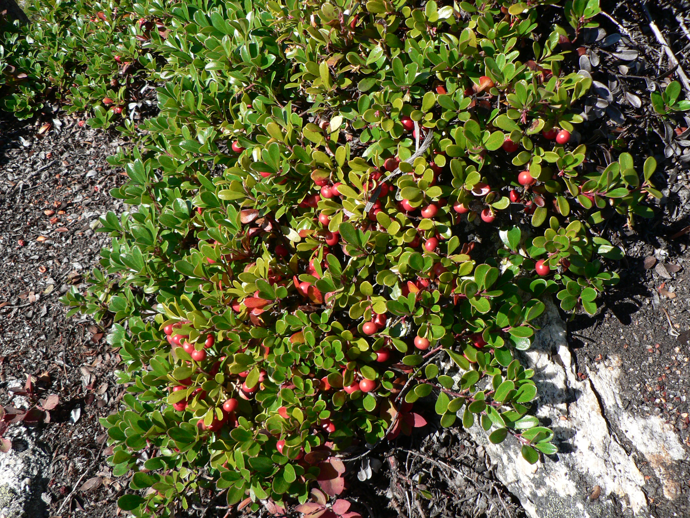

Arctostaphylos uva-ursi
common name: uva ursi, bearberry
en español: gayuba, uva de oso
plant family: Ericaceae (heath/heather)
parts used: fresh and dried leaf  from Wikimedia Commons by Walter Siegmund - Own work, CC BY 2.5
observations/description
dried leaf
- small chips of leaf, some olive green, some reddish-brown
- light pleasant aroma, a bit lemon and a bit chrysanthemum
"Arctostaphylos uva-ursi", Wikipedia
- leaves are shiny, small, and feel thick and stiff
- tops are darker green than their undersides
- leaves remain green for 1–3 years before falling in autumn, when their colour changes to a reddish-green or purple, pale on the underside
- terminal clusters of small urn-shaped flowers bloom from May to June
- flowers are white to pink, and bear round, fleshy or mealy, bright red to pink fruits called drupes
- red fruits persist on the plant into early winter
distribution/conservation status
"Arctostaphylos uva-ursi", Wikipedia
- distribution of Arctostaphylos uva-ursi is circumpolar, and it is widespread in northern latitudes, but confined to high altitudes further south:
- in Europe, from Iceland and North Cape, Norway south to southern Spain (Sierra Nevada); central Italy (Apennines) and northern Greece (Pindus mountains)
- in Asia from arctic Siberia south to Turkey, the Caucasus, the Levant and the Himalaya
- in North America from arctic Alaska, Canada and Greenland, south to California, north coast, central High Sierra Nevada (above Convict Lake, Mono County, California), Central Coast, California, San Francisco Bay Area, to New Mexico in the Rocky Mountains; and the Appalachian Mountains in the northeast United States; prevalent across all regions of British Columbia and Alberta
- rare or endangered in several states of the Midwestern United States
- listed as 'Secure' by NatureServe
primary actions
The Yoga of Herbs, p. 217
- diuretic, astringent, antiseptic
The Modern Herbal Dispensatory, p. 316
- antiseptic, diuretic
system affinities
excretory
primary uses
The Modern Herbal Dispensatory, p. 316
- reliable diuretic
- strong disinfectant and infection-fighting properties
- useful for kidney and bladder infections, irritated female organs, and other urogenital problems
The New Age Herbalist, p. 57
- diuretic
- body converts arbutin into hydroquinone, which is a urinary disinfectant
- especially effective with alkaline urine, which can be achieved with a vegetarian diet
energetics
The Yoga of Herbs, p. 217
- reduces pitta, kapha; increases vāta
- astringent/bitter taste - pungent post-digestive effect
- cooling
The Modern Herbal Dispensatory, p. 316
- warming, drying, constricting
pharmacology
The New Age Herbalist, p. 57
- arbutin (about 8%), methyl arbutin, flavonoids, allantoin, tannins, phenolic acids, volatile oil, resin
contraindications/pharmaceutical interactions/warnings
The Modern Herbal Dispensatory, p. 316
- not for use where there is fluid deficiency, wasting, or dryness
- not recommended for long-term use due to high astringency
- prolonged use may irritate stomach and cause constipation
- not recommended during pregnancy
The New Age Herbalist, p. 57
- long-term use may produce toxic effects since large doses of hydroquinone are poisonous
- normal medicinal use perfectly safe
preparations
- tisane
- macerate
- tincture
- glycerite
- powder
dosage
The Modern Herbal Dispensatory, p. 316
- infusion: 4-8 oz, 3/day
- tincture: up to 3 mL, 1-4/day
- glycerite: 1-6 mL, 1-4/day
- powder: 1000-2000 mg, 3/day
extra information
personal experiences/simples
macerate (1 tbsp: 16 oz, 11 hours), dried leaf
- golden yellow color, a bit cloudy/opaque
- aroma deepened, very pleasant
- surprising but pleasant bitterness up front and center, not overpowering but very present
- reminds me of yarrow in its flavor and bitterness/astringency
- there is a very light but very complex floral high note going on, that chrysanthemum but mixed with something like eau de vie
tisane (1.5 tsp: 12 oz, 10 minutes), dried leaf
- slightly grassy/Asteraceae flower/marilgold aroma coming through with the hot infusion
- overall many of the aroma notes are reminding me of vitex, though much less pungent/intense
- golden yellow color, fairly clear
- bitterness is softer and comes more in the aftertaste than right at the beginning as with the macerate
- astrignency is also softer
- much softer/sweeter than the macerate
- some of the same complex high notes at the beginning of the palate, followed by a pleasantly sweet and earthy mid-palate, then soft bitterness/astringency
witchcraft
recipes
sources
"Arctostaphylos uva-ursi" on Wikipedia. Retrieved 8 May 2025.
Easely, Thomas and Steven Horne. The Modern Herbal Dispensatory (2016)
Frawley, David and Vasant Lad. The Yoga of Herbs: An Ayurvedic Guide to Herbal Medicine (1986)
Goldberg Blackthorn, Samantha. Ace of Cups Herbal Medicine and Botanical Magic Herbal School (2024)
Mabey, Richard et al. The New Age Herbalist (1988)